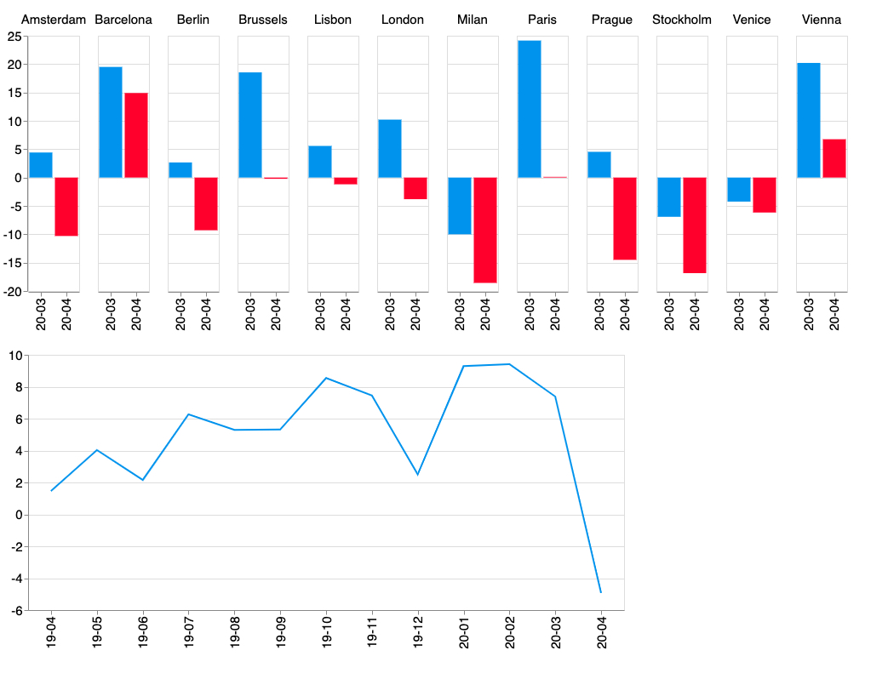
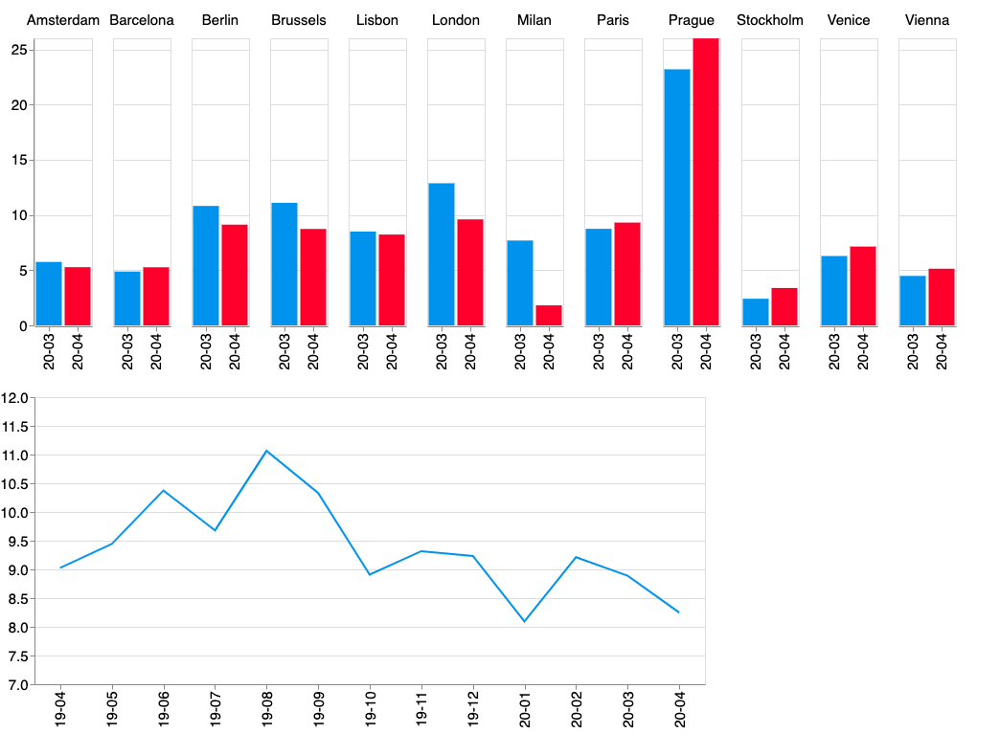
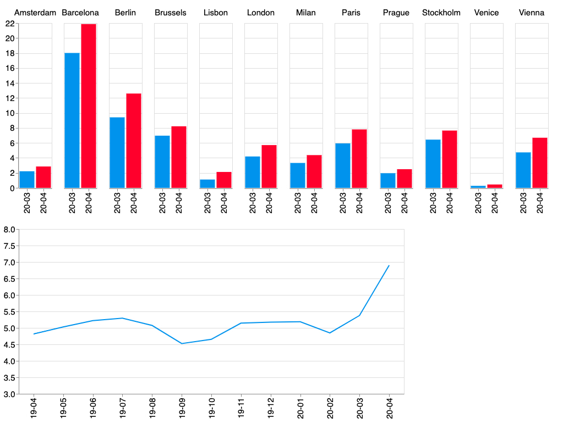

Introduction
The ongoing COVID-19 pandemic has profound economic and social impact worldwide. Following the outbreak of the novel coronavirus in China, various European countries became the next hotspot areas in March 2020. Social distancing and lockdowns disrupted most economic activities, including the services sector. The collapse of demand for tourism services was especially drastic during the spring months: flight numbers decreased by 88%, while hotel occupancy decreased by 85% in April relative to last year. The summer brought slightly better numbers with the reopening of economies, but the situation of the industry is still severe.
Without international travel, neither traditional hotels nor Airbnb hosts can operate within the previous rules of the game. According to industry reports by STR, hotels significantly decreased prices to attract visitors. How about Airbnb? Based on the characteristics of peer-to-peer services provision, we can expect that Airbnb hosts reacted differently to the crisis.
First, short-term rental is not the primary source of income for many hosts. In the absence of tourists, a large number of hosts could have decided to withdraw their homes from Airbnb and redirect them for long-term rental until tourism rebounds. This may have a positive effect on cities struggling with overtourism and shortage of housing.
Second, hosts that decided to stay on Airbnb could have also adjusted services. Various new potential use cases may have emerged during the months of social distancing, such as renting flats for home office or self isolation. According to Airbnb CEO Brian Chesky, the length of bookings increased during the pandemic, along with the role of rural areas.
How did hosts react to the pandemic? In this blog post, I present some data insights about Airbnb for the first phase of the COVID crisis. I analyse the following attributes in 12 EU cities:
- number of active listings (booked for min 1 night in next two months)
- average price per night
- length of minimum stays
I use data from Inside Airbnb that publishes web-scraped data on Airbnb listings in a large number of cities on a monthly basis. For each analysed city, datasets for each month were downloaded between the period April 2018 - April 2020.Analysis
Let's begin the analysis with changes in supply - the number of active listings (Figure 1). Airbnb was on a dynamic growth path until February 2020: on average, there were around 9% more active offers than a year ago. Even in March, the number of offers on the platform was higher than a year ago, although numbers fell in Milan, Venice and Stockholm. However, April brought a significant fall of active offers (5%, relative to April 2019). The strongest decrease occurred in Milan (-19%), Stockholm (-17%) and Prague (-15%). In some of the cities, the numbers did not fall below the level of the previous year, but previous growth was eroded, as in Paris or Brussels. The only cities where the size of the market did not fall relative to the previous year was Barcelona and Vienna. Therefore, the results suggest that a significant share of Airbnb hosts withdraw listings, and potentially moved to the long-term rental market.
Figure 1. Number of active listings: Percentage change from same month previous year (below: average across cities)  Next, let's examine changes in prices (Figure 2). Prices for accommodation on Airbnb have been consistently higher than a year ago, also including the months of the pandemic. Unlike hotels, Airbnb hosts did not decrease prices, but kept around 8% higher relative to 2019. Somewhat surprisingly, rates stayed high even in the Italian cities. Therefore, these results suggest that Airbnb hosts were not forced to drop rates, and were able to flexibly adapt to the changing market conditions.
Figure 2. Airbnb average price: percentage change from same month previous year (below: average across cities) 
Finally, let's analyse changes in the share of offers that require longer bookings. Potential new use-cases may include the rental of second homes for local residents, who are in need of flats for distant work or self-isolation. The length of such stays should be longer than the usual short-term trips, but shorter than a long-term lease. Therefore, the share of Airbnb offers with minimum 14 day stays is calculated (Figure 3). Before the pandemic, the average share of active offers with minimum 14 night stays had been between 4-5%, and has increased to 7% by April. The share of such offers has risen in all of the analysed cities.
Figure 3. Share of listings with minimum two week stays (below: average across cities) 
Conclusions
The results support that Airbnb hosts were less constrained and were able to pivot towards other services than short-term accommodation provision. A significant share of flats returned to the long-term rental market that most probably contributed to the drop in rents experienced in various major cities.
Moreover, the share of offers for longer stays increased in all 12 analysed cities. This may suggest a greater importance of new use-cases, such as renting homes for local residents for home office or self isolation.
This preliminary analysis shows that Airbnb is transforming and adopting to the "new normal". In the absence of large fixed costs, hosts can relatively easily adjust supply to demand. The lower number of listings should lead to a decrease of problems related to overtourism and housing shortage. However, it is uncertain whether this process is permanent.